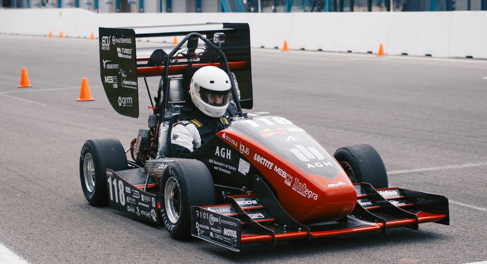
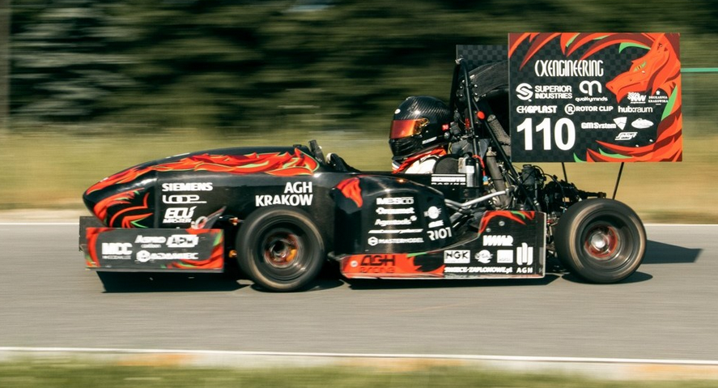
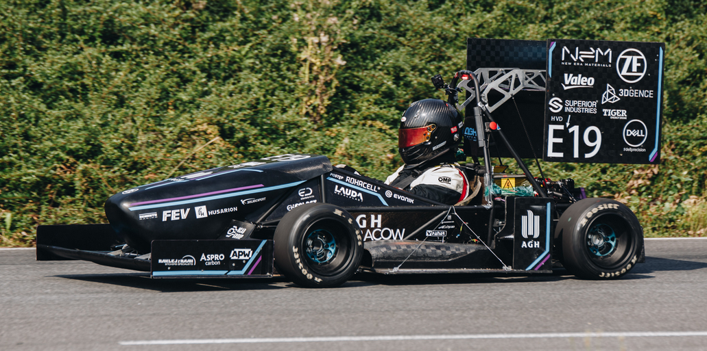
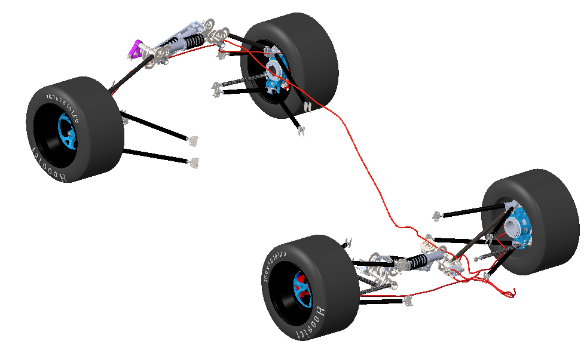
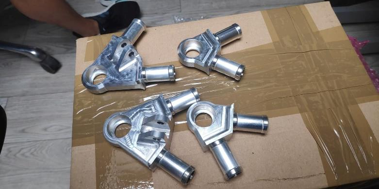
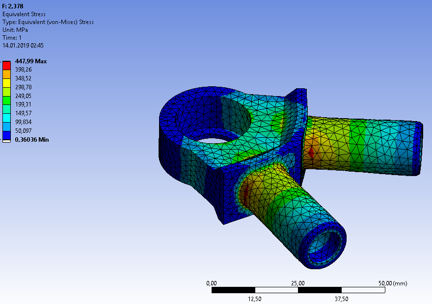

AGH Racing Team
Projektowanie i wykonanie elementów zawieszenia bolidów Formula Student. Zakres rozwijał się od stalowych wahaczy po rozwiązanie kompozytowe dla samochodu elektrycznego.
| ID projektu | PRJ-002 |
|---|---|
| Klient | AGH Racing Team |
| Okres | 2017–2020 |
| Rola | Suspension Engineer |
Zawieszenie projektowane dla rzeczywistej rywalizacji
W studenckim zespole inżynierskim AGH Racing odpowiadałem za kompleksowe projekty mechaniczne układów zawieszenia i pracowałem nad procesami zwiększającymi efektywność zespołu. Było to środowisko, w którym projekt nie kończył się na modelu 3D. Komponent trzeba było obliczyć, wykonać, zamontować w samochodzie i zweryfikować podczas testów oraz zawodów.
Brałem udział w budowie dwóch bolidów spalinowych oraz pierwszego polskiego elektrycznego bolidu wyścigowego Formula Student. Kolejne samochody oznaczały inne wymagania, nowe ograniczenia konstrukcyjne i możliwość wykorzystania wiedzy zdobytej przy wcześniejszych rozwiązaniach.



Od koncepcji do wykonanego komponentu
Zakres łączył projektowanie komponentów, analizę wytrzymałościową, rozwój konstrukcji kompozytowej oraz udział w wytwarzaniu części. Pracowałem zarówno nad geometrią całych elementów zawieszenia, jak i nad detalami połączeń, które musiały przenosić rzeczywiste obciążenia działające na bolid.
Doświadczenie z frezarką CNC pozwalało spojrzeć na konstrukcję również z perspektywy wykonania. Dzięki temu decyzje podejmowane w CAD mogły uwzględniać sposób mocowania, kolejność obróbki oraz ograniczenia dostępnej technologii.
- Projekt stalowych wahaczy dla dwóch bolidów Grażyna.
- Projekt kolumny kierowniczej dla spalinowego bolidu Grażyna.
- Projekt kompozytowych wahaczy dla elektrycznego bolidu LEM.
- Wykonanie komponentów na frezarce CNC w ramach pracy zespołu.
Lżejszy zestaw wahaczy dla bolidu elektrycznego
Najbardziej konkretnym rezultatem mojego projektu była redukcja masy zestawu kompozytowych wahaczy. Przejście ze stali na włókno węglowe wymagało zmiany sposobu myślenia o konstrukcji, połączeniach i przenoszeniu obciążeń.
Wyniki zawodów przedstawione poniżej są osiągnięciami całego zespołu AGH Racing. Oddzielam je od własnego rezultatu konstrukcyjnego, ponieważ na pozycję bolidu wpływała praca wszystkich sekcji zespołu.
Redukcja masy zestawu kompozytowych wahaczy zaprojektowanych dla elektrycznego bolidu LEM.
Osiągnięcia AGH Racing
Rezultaty zespołowe obejmują zawody Formula Student w Europie, Stanach Zjednoczonych i Australii. Pokazują one, że projektowane samochody były oceniane nie tylko podczas konkurencji dynamicznych, ale również pod względem konstrukcji i przygotowania biznesowego.
- Formula SAE Australasia 2020, 1. miejsce w kategorii Design.
- Formula SAE Michigan 2019, 3. miejsce w acceleration i 15. miejsce ogółem na 139 zespołów.
- Formula FS Netherlands 2018, 1. miejsce w acceleration, 2. w skid-pad, 2. w autocross i 5. ogółem.
- Formula FS Spain 2018, 1. miejsce w acceleration.
- Formula SAE Michigan 2018, 4. miejsce w Business Plan, 5. w Endurance, 6. w Skid-Pad i 9. ogółem na 118 zespołów.



Praca inżynierska i publikacje
Projektowanie zawieszenia stało się również podstawą pracy dyplomowej i trzech publikacji naukowych. Pozwoliło to uporządkować obliczenia, opisać przyjęte założenia i przekształcić praktyczną pracę nad bolidem w materiał, z którego mogły korzystać kolejne osoby.
- Praca inżynierska: „Analiza wytrzymałościowa połączenia wahacza zawieszenia bolidu Formula Student w programie ANSYS”.
- „Analiza połączeń zakładkowych w kontekście projektowania kompozytowego wału napędowego”, ISBN: 978-83-949477-4-3.
- „Projektowanie komponentów zawieszenia bolidu Formula Student na przykładzie piasty kierowanej”, ISBN: 978-83-949477-2-9.
- „Projektowanie wahaczy bolidu Formula Student z zastosowaniem włókna węglowego”, ISBN: 978-83-949477-2-9.
Rozwijasz komponent, którego masa i wytrzymałość mają znaczenie?
Mogę wesprzeć projektowanie mechaniczne, analizę konstrukcji, prototypowanie i przygotowanie rozwiązania do wykonania.